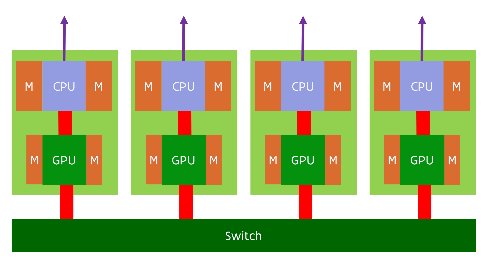

Status of GPU computing¶
Too much hype¶
Even though GPU computing, or accelerator computing in general, is definitely here to stay and important for the future of not only supercomputing but computing in general as what can be done with a given amount of power is important in many markets (also on mobiles that have to get their power from a battery), it does not mean that it works for all applications. Benchmarking of supercomputers with accelerators is often more benchmarketing. GPU computing is often overhyped using incomplete benchmarks (basically only benchmark that part of the code that can be properly accelerated), marketing by numbers (redefine common terms to get bigger numbers, something that in particular NVIDIA is very good at) and comparing apples and oranges by comparing systems with a very different price or total cost of ownership, e.g., comparing a server with multiple accelerators costing 60k EURO or more with a standard dual socket server costing only 10k EURO and using only one fifth of the power (these prices being what one actually paid for such nodes in 2022).
The NVIDIA vendor lock-in and its success in the market have made accelerators very expensive. At the current price point, GPU computing only makes sense from a price point of view if the speed-up at the application level is a factor of 2.5 or more per accelerator card compared to a standard medium-sized dual socket node. Due to the overdemand due to the explosion of AI, the situation is currently getting even worse as the prices of GPU cards rise faster than those of CPUs, so this may soon become a factor of 4 or 5 that you need to gain.
As we have seen, some features of accelerators have been carried over to traditional CPUs in the form of new instructions supporting vector and nowadays even matrix computing, and in some cases they may just be the better choice as CPUs have more memory readily available and as programming is easier.
Problems and solutions¶
There are several problems with current GPU designs:
-
The amount of memory that a GPU can address directly and has fast enough access to, is limited. 2020 GPUs were limited to 32-48 GB of memory, in early 2021 a 80 GB GPU appeared on the market, in 2022, the first GPU with 128 GB of memory appeared on the market (AMD MI250/MI250X), in (very) late 2023, the first GPUs with 192 GB of memory became available (AMD MI300X) and by the end of 2024 the first GPUs with 256 GB of useable memory made their appearance (MI325X). But this is still relatively small to typical memory sizes on a regular dual socket server that is much slower than the GPU.
-
Programming bottleneck: Having to organise all data transport manually and working with separate memory spaces is a pain.
-
The link between the CPU and the GPU is a bottleneck. The PCIe bus that typically links the CPU to the GPU has a rather limited bandwidth compared to either the bandwidth of the CPU memory of the bandwidth of GPU memory.
-
The GPU is rather slow for serial code, so that code often has to run on the host. Which is then an issue since it may require additional copying between the CPU and GPU.
However, there is hope.
The amount of memory that can be used by a GPU will increase a lot the coming years. Both the memory packages are getting bigger by stacking more dies in 3D, and the number of memory packages that can be integrated in the overall GPU package is increasing. In (very) late 2023, the first GPUs with 192 GB of memory appeared on the market, using 8 24 GB packages. It is expected that by 2025 the number of packages might grow to 12, with 32 GB packages also becoming available, resulting in 384 GB of RAM. (The current HBM standard, HBM3E, theoretically even allows 64 GB packages.)
The programming bottleneck can already be partially solved by unified memory, using memory pointers that work on both CPU and GPU, and further hardware support for virtual memory that can then trigger software that migrates memory pages under the hood. NVIDIA GPUs have had some of those features since the Pascal generation in 2017. However, one can do even better by physically sharing memory spaces between GPU and CPU, and supporting some level of coherency so that the CPU can access the GPU memory without risk of inconsistent data, or even the GPU can access the memory of the CPU, though that is less interesting as the CPU can never provide the memory bandwidth that the GPU needs to perform well. NUMA style shared memory spaces were first explored in the Sierra and Summit USA pre-exascale systems (as we discussed before) but is now also seen in the MI250X GPU from AMD which is a special version of the MI200 family connecting to the CPU through InfinityFabric, the same interconnect that AMD uses internally in its sockets to link the CPU dies to the I/O die, and also uses to connect CPU sockets or to connect GPUs to each other in the MI100 and MI200 generations. The Intel Ponte Vecchio GPU combined with the Sapphire Rapids CPU that is used in the Aurora supercomputer supports a similar feature, as does the NVIDIA Grace CPU and Hopper GPU integrated in a single package.
The physical sharing of memory spaces with some level of coherency is also the first step in solving the problem of copying data back and forth all the time. E.g., if a CPU can access memory attached to the GPU without risks of coherency problems, then there is less need to copy full memory pages and also not to copy those back, as the link that is used in those GPU systems to connect the CPU to GPU is as fast as the links that are typically used to connect two CPU sockets. The NVIDIA Grace Hopper "superchip" shows the next step. By integrating the CPU and GPU in the same package, it is possible to have a much higher bandwidth between both, reducing the copying bottleneck in cases where copying is still needed. However, with the AMD MI300A, and without doubt future Intel and NVIDA chips, we will see even closer integration where CPU and GPU chiplets share the memory controllers. The Apple M series chips give an indication of what can be obtained with such a system, as these systems perform way better in some applications that use acceleration than one would expect from looking at systems with discrete GPUs with similar theoretical performance. This can solve both the third and fourth issue mentioned above.
Evolution of GPU nodes¶
We will now discuss this evolution in some more detail.
GPU subsystem connected via PCIe¶
Around 2016, a typical GPU compute node consisted of a dual socket server with 1-4 GPUs attached to the CPUs. A typical design would have been:

The red line between the two CPUs denotes a fully cache coherent link between the CPUs. In 2016 this would very likely have been either Intel CPUs or IBM POWER CPUs, and both had proprietary fully cache coherent links to link CPUs (but not GPUs) in a shared memory system. The red link between the GPUs denotes a similarly proprietary connection between the GPUs for easy data transfer between the GPUs at typically a much higher bandwidth than that offered by the connections between the CPU and GPU. However, not all systems used such a link between graphics cards. A CPU was connected to the GPUs using PCIe, and similarly a network interface would also be connected to a CPU using PCIe.
A typical 4-GPU node based on the NVIDIA Ampere A100 GPU launched in 2020 would look similar to:
There are many variants of quad GPU designs with the A100 GPU, with single and dual socket CPU servers. However, as some 2020-era CPUs didn't have enough PCIe lanes to connect 4 GPUs, 2 network cards and in some cases also some local fast SSDs on two sockets (let alone a single CPU socket), a different solution was needed. The above design solves this by using two PCIe switches (the magenta circles), and each PCIe switch connects the CPU to two of the GPUs. In the above design two network cards are used per node, one connected to each of the CPU sockets. Some variants of the design will connect the network cards and/or NVMe SSDs (a type of SSD that uses the PCIe interface for fast data transfer) also to the switches for better direct data transfer between the interconnect and the GPUs and/or the SSDs and the GPUs.
Coherent interconnect between CPU and GPU¶
The next evolution of this design is used in the USA pre-exascale systems Sierra and Summit, both using IBM POWER9 CPUs and NVIDIA Volta V100 GPUs. More recently, the idea is revived in the GPU compute nodes of the Frontier and LUMI supercomputers based on the MI250X GPU. A simplified diagram of the LUMI and Frontier GPU nodes is:

The GPU compute nodes of LUMI and Frontier use a special variant of the Zen3-based AMD Epyc processor. In this variant, the PCIe lanes are replaced by Infinity Fabric connections. In an MI250X, the 4 GPU packages are connected with each other and with the CPU through Infinity Fabric links. Each GPU package connects to its own quarter of the AMD Epyc processor (remember from earlier that the I/O die is subdivided in 4 quarters, in this case each connected to two CPU chiplets with 8 cores each). This creates a unified memory space with some level of coherency. Also noteworthy is that the interconnect is no longer connected to the CPU, but the 4 network cards are each connected to a GPU package (through a PCIe interface). This makes this compute node really a GPU-first system, almost a system where the CPU is only used for those parts of the code that cannot be accelerated at all by a GPU and to run the Linux operating system.
The true picture of the MI250X GPU node is a bit more complicated though. Each GPU package contains two GPU dies, and these are connected to each other through some Infinity Fabric links. Each GPU die connects to 4 memory packages, with 64 GB of memory per GPU die. However, the connection between two GPU dies is sufficiently bandwidth-starved that programming-wise a single GPU package should be considered as two separate GPUs. Each individual GPU die has its own InfinityFabric link to the CPU and seems to have a preferential CPU chiplet. Even though the connection between the GPU packages appears to be an all-to-all connection, this is not true when one looks at the connections between the GPU dies.
Integration of CPU and GPU in a single package: NVIDIA GH200¶
Even though the MI250X has a level of cache coherency, using the memory in a unified matter is still a problem, partly because of the extra latency introduced by the fairly long distance between the CPU and GPU, partly also because of the limited memory bandwidth on the CPU side. NVIDIA's Grace Hopper Superchip, available in 2024, works on those two problems by integrating the CPU and GPU on a single package and not only putting the GPU memory, but also the CPU memory on that package. The CPU part is called Grace and is a CPU based on the ARMv9 architecture, the newest version of the ARM architecture at the time of design of the Grace processor. The GPU part of the package is the Hopper architecture and similar to the one in the SXM and PCIe cards released in the fall of 2022, but with all 6 memory controllers enabled and faster HBM3e memory (also used in the regular H200 GPU).
The CPU and GPU still both have their own memory controllers and basically behave as separate NUMA domains, but as the connection between the two has been brought on-chip the bandwidth between CPU and GPU is a lot higher than in the MI250X architecture or the Summit and Sierra systems with IBM POWER9 and NVIDIA V100 chips. The CPU memory is not provided through external DIMMs, but through a number of internal LPDDR5X modules (for a total of 480 GB) integrated in the CPU-GPU package in a similar way as the GPU memory has been integrated in the package for a number of generations already. Integration of this memory type is popular in smartphones where it saves both space and power, and is also used in the Apple Silicon M-series chips, where in addition to space and power savings it also provides higher bandwidth. In the Grace chip it enables a very high memory bandwidth for the CPU, even 20% better than what the AMD EPYC 4 generation offers per socket (but not as much as the Intel Sapphire Rapids MAX chips that incorporate a small amount of GPU-style memory in the package) while still offering a high memory capacity.
The Grace Hopper superchip provides two types of external connections. There are a number of regular PCIe connections that come from the CPU die. They can be used to attach, e.g., network cards (including a HPC interconnect) and NVMe drives. There are also a number of NVLINK connections coming from the GPU die. These connections are similar to the ones already used in previous generation NVIDIA GPUs to link GPU packages and offer a much higher bandwidth interconnect. They can be used to interconnect a number of Grace Hopper superchips in a NUMA shared memory way.
This makes the Grace Hopper superchip a very flexible building block. Depending on the needs those chips can be combined in different ways. One can connect individual single package nodes through any HPC interconnect in a distributed memory way. It is also possible to use NVLINK technology to connect multiple superchips into a single system where each CPU and each GPU appears as a NUMA node to the OS. The bandwidth of this connection is much higher than the typical inter-socket interconnect in CPU-based servers, but still a lot lower than the memory bandwidth that the GPU memory system can offer. So it is very important that applications exploit the NUMA structure of the memory. It is also possible to combine both approaches: Build supercomputer nodes with up to 8 superchips with a single NVLINK switch level, and link those nodes together using a traditional HPC interconnect. A possible layout of such a node is shown in the following figure:

In this figure we combine 4 Grace Hopper packages in a single node and have chose to connect each package directly to the interconnect for additional bandwidth.
Fully unified CPU and GPU: AMD MI300A¶
The AMD MI250X was really just a transition to the MI300 "Antares" series, that in one variant goes one step further beyond the integration that the NVIDIA Grace Hopper architecture offers. In that generation, announced in December 2023, one of the variants (the MI300A) merges the CPU and GPU completely, as CPU cores and GPU Compute Units are integrated in a single package and share the memory controllers and on-package memory. In fact, the reality is that memory outside the package is also starting to limit CPU performance as an increasing number of CPU codes becomes memory bandwidth bound, so even for the CPU it makes sense to switch to smaller but much higher bandwidth memory in the package.
The AMD MI300A fully integrates the CPU and GPU chiplets and memory controllers with memory in a single package. Whereas the MI250x has some level of cache coherency but still needs to rely on page transfers in most cases, in the MI300A the CPU and GPU memory is fully unified (physical and virtual), with both sharing the same memory controllers and memory, which will enable to fully eliminate redundant memory copies at least when going between CPU and GPU in the same package. The MI300A was first mentioned at the AMD Financial Analyst Day in June 2022 and at CES'2023 (early January 2023), where a full package was shown, but still with very little detail. It was launched in AMD's AI event on December 6, 2023. The MI300A combines 24 zen4 CPU cores with 228 CDNA3 GPU Compute Units in a single package. The package contains 13 chiplets stacked into two layers. The bottom layer contains 4 chiplets with the memory controllers and last level cache. These 4 chiplets connect to 8 HBM3 memory modules offering a total of 128 GB of memory with a bandwidth of 5.3 TB/s. On top of this are 6 GPU chiplets with 38 Compute Units each, and 3 CPU chiplets with 8 zen4 cores each. The bandwidth between these 13 chiplets is much higher than between the MI250X chiplets, enabling the whole package to function as a single GPU.
The MI300A is used as the basis of the El Capitan exascale supercomputer installed at Lawrence Livermore National Laboratory in the USA. The basic design of the node is shown in the following picture:

Here we see four MI300A packages. These four packages have an all-to-all connection using a new generation of InfinityFabric, and each GPU packages also connects to a network card using PCIe.
The total memory capacity of such a node is rather limited. It is not clear why AMD chose to use the 16 GB memory packages rather than the 24 GB ones (which would have resulted in 192 GB of memory per package), as the latter are used in the MI300X which is the discrete, PCIe-attached version of the MI300 GPUs. It may be for cost reasons, or simply because the verification and production of MI300A started a few months before MI300X and the 24 GB packages may not have been available yet. But for applications that don't need those large memory capacities and scale nicely over NUMA domains and then further over distributed memory nodes, the more uniform architecture will certainly make life easier and offer great performance benefits.
In Europe, HLRS has ordered a small system based on MI300A GPUs to prepare for a bigger exascale system using a future AMD GPU later in the decade.
Intel was also working on a similar design, code-named Falcon Shores that was intended to hit the market in 2024, but in an announcement in March 2023 it was said that the chip was postponed till 2025 (but it did not show up), and the announcement also mentioned it as a GPU, explicitly scrapping the XPU term they used before. Since then, Intel went silent and it is not even clear if they will launch another datacenter-ready GPU for general compute and AI.